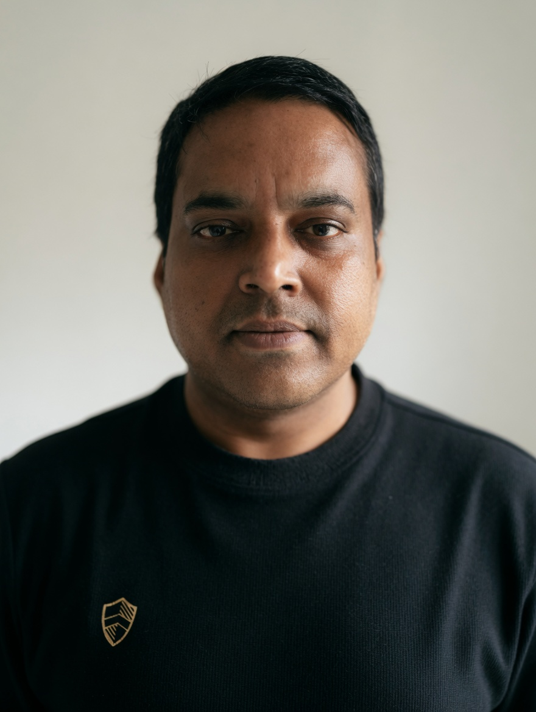

The world is full of good things happening. Let's find three of them.
🌱 🌟 🤝
Good things are happening
Click below and we'll find 3 genuinely positive things happening in the world right now.
Curated with ☀️ — only the good stuff, always.
✨ About
Who's behind this?

Hey! I'm Amlan — a Program Manager with 19+ years of experience leading large-scale enterprise IT transformation programmes across cloud migration, application modernisation, and platform engineering. Outside of work, I write about biology, patterns, and the quiet mathematics of living things. I walk a lot. I listen to flowers.
I currently lead the full OCI cloud migration and Kubernetes workload modernisation at Proximus, and earlier delivered the AWS cloud migration at bpost — Belgium's largest telecom and national postal operator. My career also spans Accenture, Cognizant, and TCS, with earlier work delivering clinical research programmes for global pharma — Wyeth (now Pfizer), Novartis, Sanofi, Boehringer Ingelheim, and DaVita.
Alongside delivery, I build AI agents in production — a SteerCo Slide Generator and Risk Analyser Agent embedded in my live Proximus programme using Claude Code, plus a Job Search Agent that aggregates LinkedIn, Indeed, Glassdoor and Adzuna listings weekly and ranks them with the Anthropic API. Same pattern, different scale: identify the friction, build the agent, ship it.
Outside of work — and increasingly, alongside it — I'm returning to the questions that have always pulled at me: how living things work, how patterns connect biology to physics to information, and how we can actually know what we think we know. This site is where those essays and experiments live. 🚀